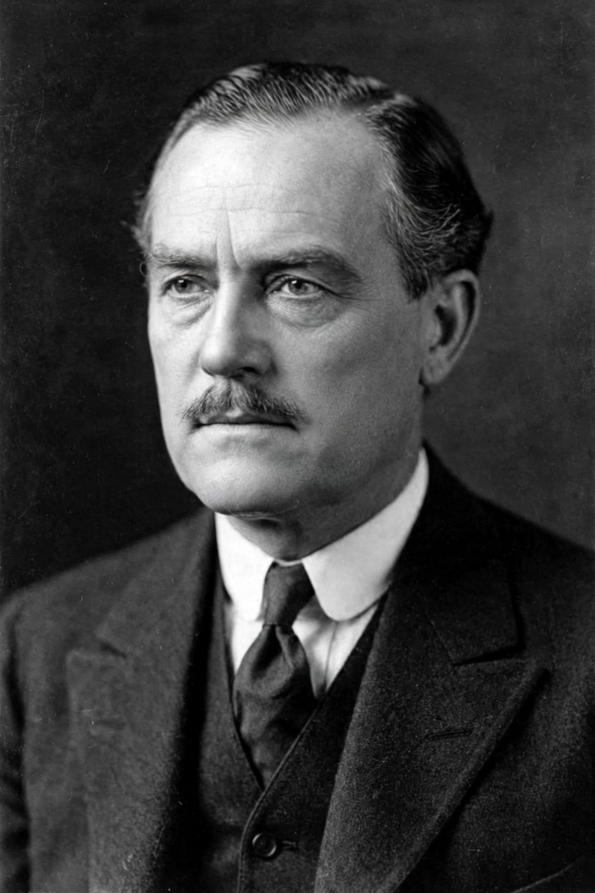

| Born | 20 September 1879, Årjäng, Sweden |
|---|---|
| Died | 3 January 1960 (aged 80), Stockholm, Sweden |
| Occupation | Film director, actor, screenwriter |
| Notable films | The Phantom Carriage (1921), He Who Gets Slapped (1924), The Wind (1928) |
| Late role | Professor Borg in Wild Strawberries (1957) |
Victor David Sjöström (Swedish: [ˈvɪ̌kːtɔr ˈɧø̂ːstrœm]; 20 September 1879 – 3 January 1960), sometimes known in the United States as Victor Seastrom, was a pioneering Swedish film director, screenwriter, and actor. He began his career in Sweden as an actor in the early 1910s and, alongside Mauritz Stiller, became the leading figure of the golden age of Swedish silent cinema.
Working for the studio Svenska Biografteatern (later Svensk Filmindustri), Sjöström made literary adaptations and dramas notable for their use of natural landscape as a dramatic force, including Ingeborg Holm (1913), a social-problem film that helped prompt reform of Swedish poor laws; Terje Vigen (1917); The Outlaw and His Wife (1918); and The Phantom Carriage (1921), adapted from Selma Lagerlöf, famous for its double-exposure ghost effects and nested flashback structure.
Recruited to Hollywood in 1924, he directed under the name Victor Seastrom for Goldwyn and MGM, making He Who Gets Slapped (1924) with Lon Chaney, The Scarlet Letter (1926) with Lillian Gish, and The Wind (1928), now regarded as one of the masterpieces of late silent cinema. The arrival of sound sent him back to Sweden in 1930, where he directed fewer films and increasingly acted.
Sjöström's final performance, at 77, was his most famous as an actor: the elderly Professor Isak Borg in Ingmar Bergman's Wild Strawberries (1957). Bergman, who had seen The Phantom Carriage repeatedly as a young man, acknowledged Sjöström as a formative influence. Sjöström died in Stockholm in 1960.
From Wikipedia, the free encyclopedia. Recreated article.